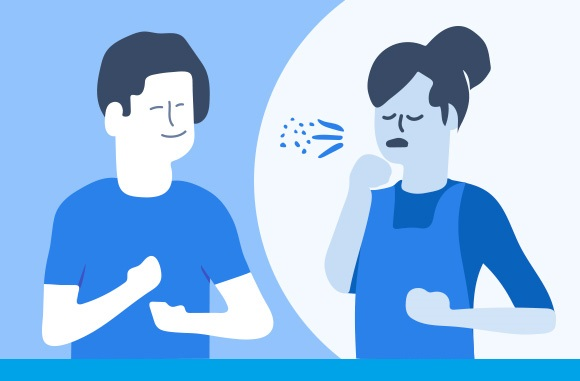

- Coronavirus Disease 2019 Basics >
- How it Spreads >
- How To Protect Yourself >
- Symptoms & Testing >
- Outbreak In Your Community >
- Myth-Busters of coronavirus >
Coronavirus disease (COVID-19) is an infectious disease caused by the SARS-CoV-2 virus.
Most people who fall sick with COVID-19 will experience mild to moderate symptoms and recover without special treatment. However, some will become seriously ill and require medical attention.
Coronaviruses are a large group of viruses that have crown-like thorns on their surface. The Latin word for crown is coronam.
There are many types of coronavirus, including:
229E, which can cause the common cold
MERS-CoV, which causes Middle East respiratory syndrome (MERS)
SARS-CoV, which causes severe acute respiratory syndrome (SARS)
In 2019, scientists identified a novel coronavirus. They named it severe acute respiratory syndrome-related coronavirus, or SARS-CoV-2 for short.
People should watch for symptoms such as a fever, cough, or shortness of breath. If a person experiences these, they should take their temperature if possible.
A person should not measure their body temperature within 30 minutes of exercise, or after taking a temperature-lowering medication, such as acetaminophen.
It is worth noting not everyone who develops COVID-19 will get all of these symptoms. If they experience any of the potential signs of COVID-19, they should call a medical professional for advice.
If someone develops possible COVID-19 symptoms, they should stay at home. They should also avoid public spaces and not use public transport. If possible, they need to remain in a separate room in the home, away from other people or pets.
A person with symptoms should call a doctor via phone if possible. They should not visit a medical facility without calling ahead first, as this could expose other people to the virus. A doctor can provide advice on what to do next.
Most people with COVID-19 develop mild symptoms and recover on their own. However, if a person develops the following symptoms, they should seek emergency medical care:
Most people infected with the virus will experience mild to moderate respiratory illness and recover without requiring special treatment. However, some will become seriously ill and require medical attention. Older people and those with underlying medical conditions like cardiovascular disease, diabetes, chronic respiratory disease, or cancer are more likely to develop serious illness. Anyone can get sick with COVID-19 and become seriously ill or die at any age.
The virus can spread from an infected person’s mouth or nose in small liquid particles when they cough, sneeze, speak, sing or breathe. These particles range from larger respiratory droplets to smaller aerosols. It is important to practice respiratory etiquette, for example by coughing into a flexed elbow, and to stay home and self-isolate until you recover if you feel unwell.
The best way to prevent and slow down transmission is to be well informed about the disease and how the virus spreads. Protect yourself and others from infection by staying at least 1 metre apart from others, wearing a properly fitted mask, and washing your hands or using an alcohol-based rub frequently. Get vaccinated when it’s your turn and follow local guidance.
Efforts to control COVID-19 transmission have reduced economic activity and led to temporary improvements in air quality in some areas. In contrast, as carbon dioxide and other greenhouse gases that drive climate change persist for a long time in the atmosphere, temporary emissions reductions only have a limited effect on atmospheric concentrations. Carbon dioxide levels at observing stations around the world in the first months of 2020 have been higher than in 2019.
Environmental improvements resulting from the COVID-19 response may be reversed by a rapid expansion of polluting economic activities once the measures have ended, unless there is a clear focus to promote equity, environmental health, around a just transition to a green economy.
The main priority is to keep the virus out of the food environment. Several key measures are required including upgrading of cleaning and sanitation measures, disinfecting surfaces and high-touch points, educating staff on the virus and how to protect themselves and others, reinforcing protocols such as physical distancing, hand washing, and improved security with people staying in their vehicles/sanitizing hands when handing out documents and other material.
Whether or not they have symptoms, infected people can be contagious and the virus can spread from them to other people.
Laboratory data suggests that infected people appear to be most infectious just before they develop symptoms (namely 2 days before they develop symptoms) and early in their illness. People who develop severe disease can be infectious for longer.
While someone who never develops symptoms can pass the virus to others, it is still not clear how frequently this occurs and more research is needed in this area.
In general, children aged 5 years and under do not need to wear masks. However, there may be times when caregivers will choose to put a mask on a child – for example, if the child has contact with a person who is at a high risk of developing severe disease or is around someone who is ill. Children of this age should not wear masks for a long duration or without supervision.
COVID-19 spreads primarily through respiratory droplets or contact with contaminated surfaces. Exposure can occur at the workplace, while travelling to work, during work-related travel to an area with local community transmission, as well as on the way to and from the workplace.
High profile international sporting events such as the Olympics or World Cups as well as international religious events such as the Hajj count as mass gatherings. However, lower profile conferences and events can also meet WHO’s definition of a mass gathering. An event counts as a “mass gatherings” if the number of people it brings together is so large that it has the potential to strain the planning and response resources of the health system in the community where it takes place. You need to consider the location and duration of the event as well as the number of participants. For example, if the event takes place over several days in a small island state where the capacity of the health system is quite limited then even an event with just a few thousand participants could place a big strain on the health system and then be considered a “mass gathering” event. Conversely, if the event is held in a big city in a country with a large, well-resourced health system and lasts just a few hours, the event may not constitute a “mass gathering” event.
It is WHO’s view that all countries with community transmission should seriously consider postponing or reducing mass gatherings that bring people together and have the potential to amplify disease and support the recommended best practice of physical distancing. Any decision will be supported through the use of WHO tools, in particular the Risk Assessment for Mass Gatherings during COVID-19.
If movement restrictions and further national measures have been established in the country, the WHO RA does not apply. However, when the process of re-opening/conducting mass gatherings is being considered post movement restrictions, it will be key to ensure any decisions are based on a risk assessment, such as the WHO Mass gatherings COVID-19 risk assessment.
Masks are a key measure to reduce transmission and save lives.
Wearing well-fitted masks should be used as part of a comprehensive ‘Do it all!’ approach including maintaining physical distancing, avoiding crowded, closed and close-contact settings, ensuring good ventilation of indoor spaces, cleaning hands regularly, and covering sneezes and coughs with a tissue of bent elbow.
Depending on the type, masks can be used for either protection of healthy persons or to prevent onward transmission, or both.
People of all ages who experience fever and/or cough associated with difficulty breathing or shortness of breath, chest pain or pressure, or loss of speech or movement should seek medical care immediately. If possible, call your health care provider, hotline or health facility first, so you can be directed to the right clinic.
In most situations, a molecular test is used to detect SARS-CoV-2 and confirm infection. Polymerase chain reaction (PCR) is the most commonly used molecular test. Samples are collected from the nose and/or throat with a swab. Molecular tests detect virus in the sample by amplifying viral genetic material to detectable levels. For this reason, a molecular test is used to confirm an active infection, usually within a few days of exposure and around the time that symptoms may begin.
Antibody tests can tell us whether someone has had an infection in the past, even if they have not had symptoms. Also known as serological tests and usually done on a blood sample, these tests detect antibodies produced in response to an infection. In most people, antibodies start to develop after days to weeks and can indicate if a person has had past infection. Antibody tests cannot be used to diagnose COVID-19 in the early stages of infection or disease but can indicate whether or not someone has had the disease in the past.
While a person is waiting for test results, they should remain isolated from others. Where testing capacity is limited, tests should first be done for those at higher risk of infection, such as health workers, and those at higher risk of severe illness such as older people, especially those living in seniors’ residences or long-term care facilities.
‘Seroprevalence studies’ are conducted to measure the extent of infection, as measured by antibody levels, in a population under study. With any new virus, including SARS-CoV-2, initial seroprevalence in the population is assumed to be low or non-existent due to the fact that the virus has not circulated before.
In areas where SARS-CoV-2 is spreading, adults under the age of 60 interacting with children should wear a well-fitted mask that covers the nose and mouth when they are:
in indoor settings where ventilation is known to be poor or cannot be assessed, or the ventilation system is not properly maintained, regardless of whether or not physical distancing of at least 1 meter can be maintained; or
in indoor settings that have adequate ventilation if physical distancing of at least 1 meter cannot be maintained.
Adults aged 60 or over, or who have any underlying health conditions, such as heart disease, diabetes or cancer, should wear a medical mask due to their higher risk of getting seriously ill from COVID-19.
Children who have symptoms of COVID-19 should wear a medical mask at home when they are in shared spaces, as long as they can tolerate it. Family members/caregivers who come within 1 metre of the sick child at home should also wear a medical mask.
Disinfection practices are important to reduce the potential for COVID-19 virus contamination in non-healthcare settings, such as in the home, office, schools, gyms, publicly accessible buildings, faith-based community centres, markets, transportation and business settings or restaurants. High-touch surfaces in these non-health care settings should be identified for priority disinfection such as door and window handles, kitchen and food preparation areas, counter tops, bathroom surfaces, toilets and taps, touchscreen personal devices, personal computer keyboards, and work surfaces.
ensure adequate ventilation and increase total airflow supply to occupied spaces, if possible. Clean, natural ventilation (i.e., opening windows) should be used inside buildings where possible, without re-circulating the air. If heating, ventilation and air conditioning systems are used they should be regularly inspected, maintained and cleaned. Rigorous standards for installation, maintenance and filtration are essential to make sure they are effective and safe. Consider running the systems at maximum outside airflow for two hours before and after times when the building is occupied, according to the manufacturer’s recommendations.
Deciding to close, partially close or reopen schools should be guided by a risk-based approach, to maximize the educational, well-being and health benefit for students, teachers, staff, and the wider community, and help prevent a new outbreak of COVID-19 in the community.
While we are still learning about how COVID-19 affects people, so far, data suggests that children under the age of 18 years have few deaths compared to other age groups and usually mild disease. However, cases of critical illness have been reported. As with adults, pre-existing medical problems like high blood pressure, heart and lung problems, asthma, diabetes, obesity, cancer and neurological and developmental conditions are risk factors for severe disease and intensive care admission in children.
The virus is spread from person to person through liquid particles such as aerosols (smaller) and droplets (larger) from the nose or mouth which are spread when a person with COVID-19 coughs, sneezes or speaks. People can catch COVID-19 if they breathe in these droplets from an adolescent infected with the virus. Therefore, it is important to stay at least 1 meter away from others. These droplets can land on objects and surfaces. People can then become infected by touching these objects or surfaces, and then touching their eyes, nose or mouth.
Immediately seek medical care if a member of your family gets seriously ill, for example develops difficulty breathing or feels pain or pressure in the chest. If possible, either you or an adult should contact your health care provider or COVID-19 hotline for instructions and find out where and how you could get care. If your family member is confirmed as having COVID-19, you must be prepared that you and other known contacts will need to isolate for 14 days and monitor symptoms, even if you feel healthy.
No. There is currently no conclusive evidence that either weather (short term variations in meteorological conditions) or climate (long-term averages) have a strong influence on transmission. The SARS-CoV-2 virus which causes COVID-19 disease has been transmitted in all regions of the world, from cold and dry, to hot and humid climates.
There is no evidence of a direct connection between climate change and the emergence or transmission of COVID-19 disease. As the disease is now well established in the human population, efforts should focus on reducing transmission and treating patients.
Access to adequate and safe water and sanitation is essential for communities to practice basic hygiene and reduce transmission of COVID-19. Access to these services in health facilities is crucial to preventing infections, reducing the spread of antimicrobial resistance and providing quality care.
One in four health care facilities around the world lacks basic water services, directly impacting over two billion people. Around 80% of the world’s population is already experiencing some level of water scarcity. Climate change further threatens the availability of water for consumption, food production, personal hygiene, and medical care, including for infectious disease.
There are several COVID-19 vaccines validated for use by WHO (given Emergency Use Listing). The first mass vaccination programme started in early December 2020 and the number of vaccination doses administered is updated on a daily basis on the COVID-19 dashboard.
RECENT FROM BLOG
LATEST UPDATE

Caring for someone at home
Most people who get sick with COVID-19 will have only mid illness and should recover at home. Care at home can help stop the spread of COVID-19.
15 ways to keep safe and healthy
Most people who get sick with COVID-19 will have only mid illness and should recover at home. Care at home can help stop the spread of COVID-19.

If you think you are sick
If you are sick with COVID-19 or think you moight have it, follow the steps below to help protect other people in your home and community.